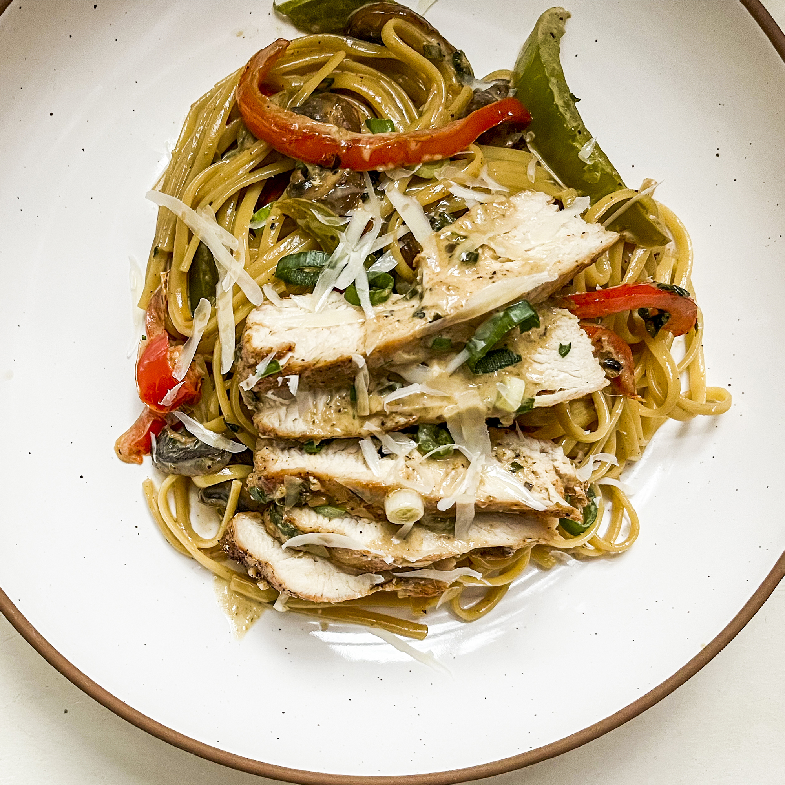

cajun-chicken-pasta

Cajun chicken pasta is easy and delicious.
Cajun cooking combines French, Southern, and other influences.
It's robust, country-style cookery, just like this dish.
Laissez les bons temps roulez and bon appétit!
Ingredients
- 4 ounces linguine pasta
- 2 skinless, boneless chicken breast halves
- 2 teaspoons Cajun seasoning
- 2 tablespoons butter
- 1 red bellpepper, sliced
- 1 green bell pepper, sliced
- 4 fresh mushrooms, sliced
- 4 fresh mushrooms, sliced
- 1 green onion, chopped
- 1 cup heavy cream
- ¼ teaspoon salt
- ¼ teaspoon dried basil
- ¼ teaspoon lemon pepper
- ⅛ teaspoon garlic powder
- ⅛ teaspoon ground black pepper
- ¼ cup grated Parmesan cheese
Steps
- Bring a large pot of lightly salted water to a boil.
Add pasta and cook until al dente, 8 to 10 minutes. Drain.
- Cut chicken breast into strips.
Place chicken and Cajun seasoning in a plastic bag.
Shake to coat.
- Melt butter in a large skillet over medium heat.
Add chicken and cook, stirring, until browned and almost cooked through,
5 to 7 minutes.
- Add bell peppers, mushrooms, and green onion. Cook, stirring, 2 to 3 minutes.
- Reduce the heat and stir in cream, basil, lemon pepper, salt, garlic powder, and black pepper.
Heat through. Add cooked linguine, toss, and heat through.
- Sprinkle with Parmesan and serve.